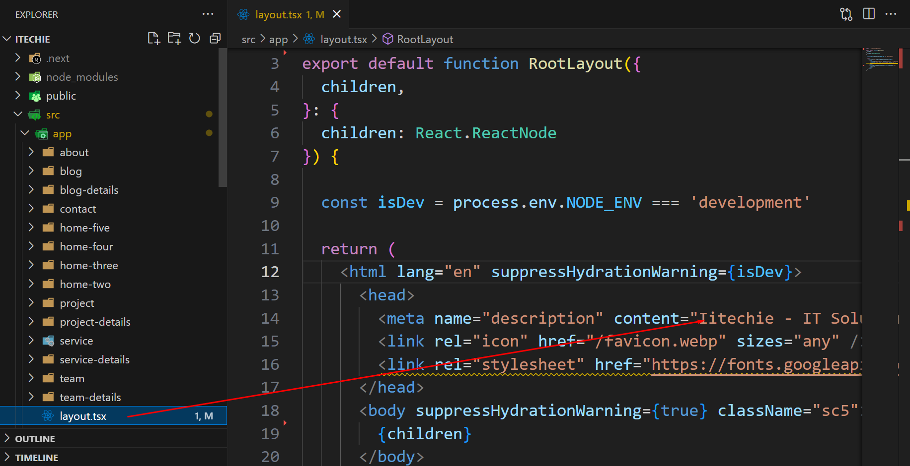
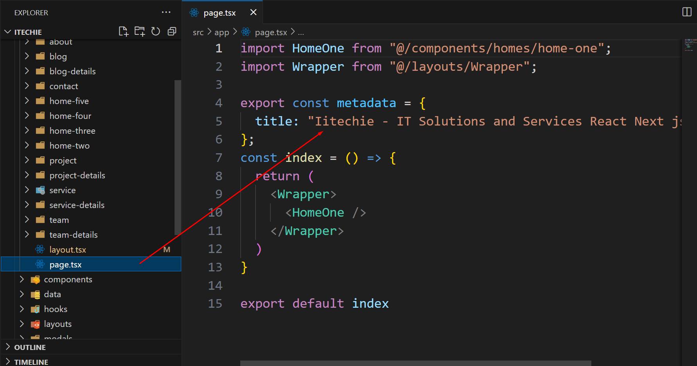
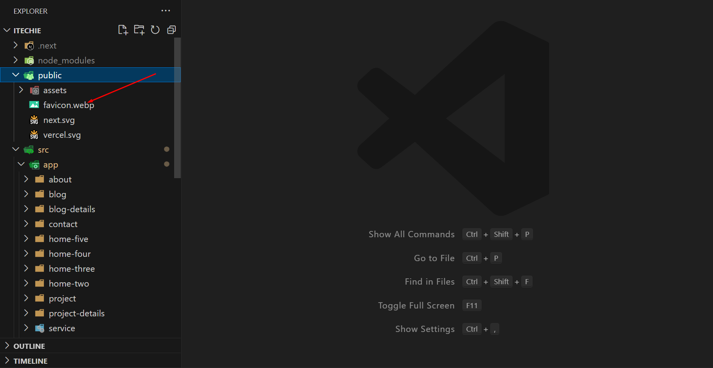
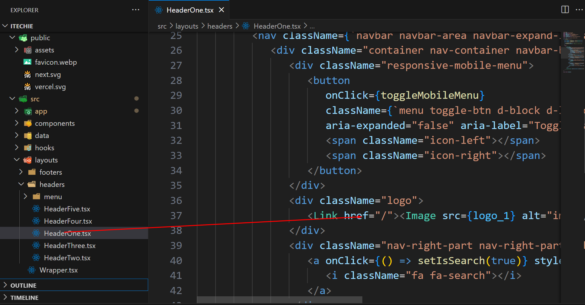

Basic Site Settings
Change Site Title, Favicon and Page Title
To change your Site title and Favicon open the Itechie in your editor and go to the location by following screenshot which are given bellow.



Change Logo
To change logo and customize other header data do the following:
